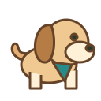

Local visual proof · fictional map · sample characters
A SMALL ADVENTURE, TOGETHER
Meet your map companions.
Two characters. One little world. Take a walk to see the pet's sprite frames in motion.

Map unavailable. Use the controls below to continue the visual proof.
Invented characters and local fixture events. No live uploads, multiplayer or runtime AI calls.
Asset provenance and failure checks
The puppy was generated from text with the built-in imagegen tool. Its exact model version is not exposed. This 4 × 4 game sheet is not a Codex pet package; frame alignment is sample quality. Owner and fallback art are original code-drawn presets.
Future flow: separate owner/pet photos → server-side generation → approved assets and validated manifests. Upload handling, photo retention and live provider access remain unimplemented.